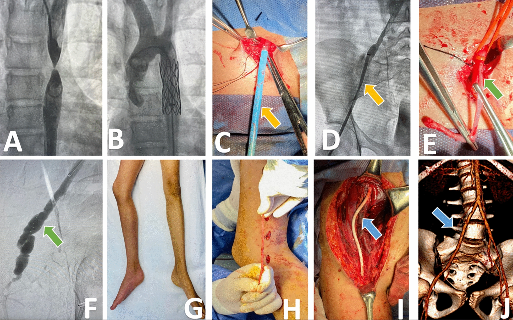
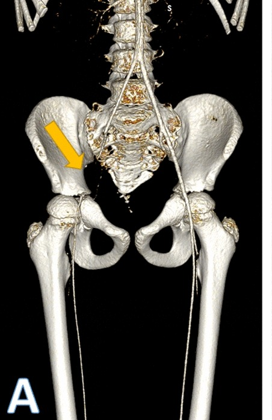
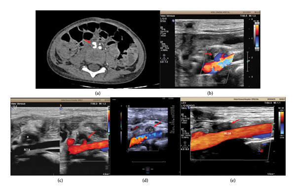

3095 — Tổn thương động mạch đùi–chậu sau can thiệp nội mạch ở trẻ: vì sao cỡ sheath quyết định, và ngưỡng nào buộc phải mổ / can thiệp lại / Iliac–femoral artery injury after pediatric catheterization
Tags: pattern:tac-mach pattern:huyet-khoi pattern:gia-phinh pattern:ro-dong-tinh-mach pattern:thieu-mau-chi vung:dong-mach-dui vung:dong-mach-chau score:ABI score:PSV protocol:Doppler protocol:CTA protocol:DSA
Mức chắc chắn (certainty): tổng hợp y văn (literature synthesis) — số liệu lấy từ 3 bài open-access đọc toàn văn: Lozano-Corona và cs, Eur J Med Res 2023 (PMC10652633, CC BY 4.0 — tổng quan 171 bệnh nhi + 3 ca nguyên văn, nguồn 2 ảnh); Ding và cs, Case Rep Pediatr 2025 (PMC12752840, CC BY 4.0 — ca giả phình chậu ở trẻ 3 tuổi điều trị bảo tồn, nguồn 1 ảnh); Salimi & Ahrabi, SAGE Open Med Case Rep 2025 (PMC12166270, CC BY-NC 4.0 — 7 ca AVF/giả phình chi ở trẻ). Không có ca nguyên văn riêng của nhóm; 3 ca trong quiz là ca nguyên văn của nguồn, ghi rõ Fig.
Câu hỏi gốc của bài: trẻ 2 tuổi vừa chọc động mạch đùi phải để theo dõi huyết động, rút sheath xong 2 giờ thì chân phải lạnh, tái, không bắt được mạch mu chân. Vậy: đây là co thắt (chờ) hay huyết khối (mổ)? Doppler lúc nào, đo gì, ngưỡng nào gọi can thiệp? Và vì sao cùng một chiếc sheath 6 Fr lại an toàn ở trẻ 12 tuổi nhưng gây tắc mạch ở trẻ 8 kg? Điểm tựa: ở trẻ, đường kính lòng mạch — không phải cân nặng — mới là biến quyết định. Catheter chiếm > 50% đường kính lòng mạch hoặc để < 1,9 mm khoảng trống quanh catheter là đủ gây co thắt và huyết khối; CFA < 3 mm làm mất mạch sau chọc tăng gấp 8,44 lần (OR 8,44; KTC 95% 2,07–34,5) (PMC10652633).
1. Tổng quan — vì sao chọc mạch ở trẻ lại khác người lớn, và vì sao huyết khối hình thành
A. Bệnh học (pathology) và cơ chế:
- Mạch trẻ không phải "mạch người lớn thu nhỏ": thành mạch giàu sợi chun, ít cơ trơn, đường kính nhỏ, di động và gấp góc nhiều hơn; động mạch dễ co thắt (vasospasm) khi bị kích thích cơ học. Đây là lý do cùng cỡ thiết bị, trẻ nhỏ chịu tổn thương nặng hơn (PMC10652633).
- Tổn thương do chọc (access injury) hình thành theo 3 bước: (1) kim/catheter bóc tách nội mạc và làm lộ lớp dưới nội mạc (yếu tố mô); (2) catheter chiếm phần lớn lòng mạch → dòng chảy quanh catheter thành dòng rối, vận tốc thấp (yếu tố dòng chảy); (3) ép sheath kéo dài + trẻ mất nước/đang dùng vận mạch → tăng đông (yếu tố máu). Ba yếu tố này là tam giác Virchow tại chỗ chọc, nên huyết khối là biến chứng hay gặp nhất, không phải giả phình.
- Vì sao lộn nội mạc (intimal eversion) lại gây tắc: sheath quá lớn so với mạch, khi rút dính chặt vào nội mạc; kéo mạnh làm nội mạc + trung mạc lộn ra ngoài như "lộn cổ tay áo", bịt lòng CFA, và phần mạch mất chỗ tựa có thể phình giả chỉ còn giữ bởi lớp ngoại mạc (PMC10652633, ca 1).
- Vì sao giả phình (pseudoaneurysm) hình thành: lỗ chọc không kín ở lớp nội mạc–trung mạc nhưng còn lớp ngoại mạc → máu phun thành túi ngoài lòng mạch; túi không có cơ trơn nên không tự co, chỉ huyết khối lấp dần hoặc to ra. Vì vậy tiếng thổi (bruit) + "yin-yang sign" trên Doppler màu là dấu hiệu chốt.
- Vì sao AVF: kim xuyên cả động mạch và tĩnh mạch ở vùng bẹn (đặc biệt khi chọc tĩnh mạch thất bại rồi chọc lại). Ở trẻ, AVF không chỉ gây suy tim mà còn cướp dòng → chi ngắn hơn theo thời gian (PMC12166270: một bé 3 tuổi có chênh chiều dài chi do AVF CFA–CFV).
- Vì sao biến chứng mạn xuất hiện muộn: trẻ có tuần hoàn bàng hệ tốt nên qua được giai đoạn cấp với ABI gần bình thường; nhưng giường mạch bị hẹp làm chi tăng trưởng chậm → chênh chiều dài chi (limb-length discrepancy) và đau cách hồi nhiều năm sau. Vì vậy theo dõi không dừng ở lúc ra viện.
B. Ngưỡng định lượng bắt buộc (cửa 1 Argon):
| Đại lượng | Con số đã kiểm chứng | Ý nghĩa thực hành |
|---|---|---|
| Chấn thương mạch ở trẻ do nguyên nhân y tế (iatrogenic) | ~50% mọi chấn thương mạch nhi; chấn thương mạch chung 0,6–1% dân số nhi (PMC10652633) | Phần lớn là do thủ thuật của chính ta → phòng ngừa bằng cỡ dụng cụ |
| Biến chứng tại chỗ chọc sau can thiệp | 2–40% tùy yếu tố nguy cơ (PMC10652633) | Khoảng rộng này phản ánh cỡ mạch và cỡ dụng cụ, không phải tay nghề đơn thuần |
| Tuổi/cân nặng nguy cơ cao | **< 1 tuổi hoặc < 8 kg: 1,3%** vs **0,3%** ở trẻ > 1 tuổi (p = 0,001) (PMC10652633 trích Vitellio/Kim) | Trẻ sơ sinh/toddler là nhóm phải đo mạch trước |
| Yếu tố nguy cơ độc lập (Lin) | < 3 tuổi, ≥ 3 lần chọc trước, thủ thuật điều trị (không chỉ chẩn đoán), dụng cụ ≥ 6 Fr (PMC10652633) | Đếm số lần chọc như đếm liều thuốc |
| Tương quan catheter – lòng mạch | Catheter chiếm > 50% đường kính lòng mạch hoặc < 1,9 mm khoảng trống quanh catheter → co thắt + tổn thương (PMC10652633) | Chọn cỡ theo đường kính đo được, không theo cân nặng |
| Sheath 7 Fr | OD 2,5–3 mm → lòng mạch phải > 3 mm (PMC10652633) | Tính theo OD (vỏ ngoài), không theo ID (lòng trong) |
| Đường kính CFA | < 3 mm → mất mạch sau chọc OR 8,44 (KTC 95% 2,07–34,5, p < 0,001) (PMC10652633) | Đây là ngưỡng tiên lượng mạnh nhất trong bài |
| Huyết khối cấp (ALLI) | 109/144 biến chứng cấp; chỉ 35 phải mổ (PMC10652633) | 70–90% cải thiện bằng kháng đông đơn thuần |
| Vị trí tổn thương | CFA 73%, EIA 15% (PMC10652633) | Đọc hình phải theo trục, không chỉ nhìn chỗ chọc |
| Biến chứng mạn | 27/171 (16%): đau cách hồi 14, chênh chiều dài chi 11 (PMC10652633) | Theo dõi tới khi trưởng thành |
| Chênh chiều dài chi | ≥ 2 cm là mức có hại; bảo tồn 23% vs mổ 9% khi thiếu máu > 30 ngày (Flanigan 1983, trích trong PMC10652633) | Lý do phải tái thông sớm, không "chờ bàng hệ" |
2. Mẫu hình + chẩn đoán phân biệt theo vị trí và thời điểm (Gamut)
- Theo thời điểm: cấp (≤ 30 ngày) — huyết khối/tắc, giả phình, tụ máu, AVF, bóc tách, đứt/lộn; mạn (> 30 ngày) — hẹp do xơ, AVF, chênh chiều dài chi, đau cách hồi (PMC10652633 định nghĩa đúng mốc 30 ngày).
- Theo vị trí: chỗ chọc CFA (giả phình, AVF, tụ máu, lộn nội mạc) · EIA (huyết khối do catheter đi ngược dòng, bóc tách, giả phình) · CIA (bóc tách, di lệch dụng cụ như Amplatzer) — phân bố CFA 73% / EIA 15%.
- Theo hình thái dòng chảy trên Doppler: mất tín hiệu màu + phổ tắt = tắc · túi có dòng xoáy hai chiều ("yin-yang") + cổ = giả phình · dòng tâm trương cao ở động mạch + phổ mạch máu đập ở tĩnh mạch = AVF · hẹp lòng có tia tăng vận tốc = bóc tách/hẹp.
- Gợi nhớ 4T sau sheath: Thrombosis (huyết khối/tắc) · Tear (bóc tách/lộn nội mạc) · Tube (túi giả phình) · Transit shunt (AVF).
3. Bảng so sánh phân biệt (ma trận đối chiếu)
| Thực thể (entity) | Hình ảnh điển hình (US / CTA / DSA) | Chốt vào (rule-in) | Chốt loại (rule-out) | Gợi ý xác nhận |
|---|---|---|---|---|
| Huyết khối/tắc CFA–EIA | Mất tín hiệu màu đoạn dài, phổ tắt (absent end-diastolic flow), CTA: khuyết thuốc lòng mạch + bàng hệ | Thiếu máu chi cấp + mất phổ + khuyết thuốc cố định trên CTA | Co thắt: phổ còn, hồi phục sau làm ấm/giãn mạch, CTA không khuyết thuốc | Doppler + CTA; DSA khi định can thiệp |
| Giả phình (pseudoaneurysm) | Túi cạnh mạch, "yin-yang sign" xoáy hai chiều, cổ (neck) thấy trên Doppler; CTA: túi ngấm thuốc song song lòng mạch | Cổ rõ + dòng xoáy hai chiều + tiếng thổi | Tụ máu đơn thuần: khối không có dòng, không cổ | Doppler màu; CTA nếu túi lớn/cần can thiệp |
| AVF (rò động–tĩnh mạch) | Động mạch: dòng tâm trương cao, RI thấp; tĩnh mạch: phổ đập (pulsatile), giãn; CTA: ngấm thuốc sớm ở tĩnh mạch thì động mạch | Ngấm tĩnh mạch thì động mạch + chênh bão hòa O₂ | Giả phình: không có ngấm tĩnh mạch sớm | Doppler + CTA; DSA để bít |
| Bóc tách / lộn nội mạc | Vạt nội mạc (intimal flap), hai lòng; CTA: đường tối trong lòng ngấm thuốc | Flap nhìn thấy + hai lòng | Huyết khối: lòng tắc hoàn toàn, không flap | CTA mỏng; DSA |
| Tụ máu tại chỗ chọc | Khối echo hỗn hợp, không có dòng, có thể chèn ép mạch | Khối không dòng + bầm tím bẹn | Giả phình: có dòng trong khối | Doppler (không dòng = an tâm hơn) |
| Co thắt (vasospasm) | Lòng mạch hẹp đều, dài, phổ giảm biên độ nhưng còn, hồi phục | Hồi phục sau 15–30 phút làm ấm/giãn mạch | Khuyết thuốc cố định trên CTA → không phải co thắt | Doppler lặp lại; tránh nong mù |
| Hẹp mạn/AVF muộn | Hẹp dài, xơ; chênh chiều dài chi, đau cách hồi | ABI giảm + chênh chi ≥ 2 cm | Bệnh lý cơ–xương gây đau | ABI, Doppler, CTA |

Hình 10 panel của ca 1 (bé gái 12 tuổi, đặt stent hẹp eo ĐMC qua sheath 12 Fr): C sheath nằm trong CFA; D đầu sheath ở CIA, mũi tên vàng chỉ chỗ hẹp EIA; E lộn nội mạc–trung mạc ra ngoài lỗ chọc; F DSA sau rút sheath: giả phình EIA dọa vỡ; G chi phải tím; I cầu nối ePTFE 6 mm; J dựng 3D CTA sau mổ, cầu nối thông. Nguồn: Eur J Med Res 2023 (PMC10652633), CC BY 4.0 — cắt từ hình gốc, giữ nguyên nhãn panel.4. Protocol chụp + ngưỡng xử trí
A. Trước thủ thuật (phòng ngừa bằng hình ảnh):
- Siêu âm đo đường kính trục chậu–đùi trước chọc ở mọi trẻ, nhất là < 1 tuổi hoặc < 10 kg; đầu dò 10–13 MHz dùng được cả ở sơ sinh (PMC10652633, đề xuất của Tadphale).
- Chọn sheath theo OD: sheath 7 Fr có OD 2,5–3 mm, nên lòng mạch phải > 3 mm; mục tiêu catheter chiếm < 50% đường kính lòng và còn ≥ 1,9 mm khoảng trống.
- Chọc dưới hướng dẫn siêu âm và chụp mạch kiểm tra ngay sau khi đặt sheath, trước khi đưa dụng cụ cỡ lớn (PMC10652633).
B. Sau thủ thuật — đo gì, lúc nào:
- Ngay sau rút sheath: bắt mạch mu chân + mạch chày sau, màu/ấm chi, ABI (bình thường 1,0–1,1; < 0,9 là bất thường).
- Doppler mạch màu ngay khi mất mạch, chi lạnh/tái, hoặc bẹn sưng nhanh; lặp lại sau 15–30 phút làm ấm để phân biệt co thắt với huyết khối (thực hành; nguồn chỉ nêu nguyên tắc co thắt hồi phục).
- CTA khi Doppler không kết luận, khi cần bản đồ trước mổ (vị trí tắc, bàng hệ, bóc tách, giả phình) — hình 3D CTA là cách nhanh nhất để thấy toàn trục chậu–đùi hai bên.
- DSA là tiêu chuẩn vàng và đồng thời là điều trị (nong bóng, stent, bít giả phình/AVF).
- Theo dõi dài hạn: ABI, đau cách hồi, đo chiều dài hai chi và biểu đồ tăng trưởng tới tuổi trưởng thành — vì 16% biến chứng mạn chỉ lộ ra sau nhiều năm.
C. Sơ đồ xử trí mất mạch sau rút sheath:
flowchart TD
A[Trẻ vừa rút sheath ĐM đùi] --> B{Mạch mu chân? Chi ấm?}
B -->|Có| C[ABI + Doppler trong 24 giờ, theo dõi 16% biến chứng mạn]
B -->|Không| D[Doppler màu ngay]
D --> E{Có phổ và hồi phục sau làm ấm?}
E -->|Có| F[Co thắt: làm ấm, giãn mạch, Doppler lại 15-30 phút]
E -->|Không| G[CTA trục chậu-đùi]
G --> H{Tắc hoàn toàn hay giả phình/AVF?}
H -->|Tắc| I[Kháng đông trước: 70-90% cải thiện]
I --> J{Còn thiếu máu sau 6-24 giờ?}
J -->|Không| K[Theo dõi ABI + chiều dài chi]
J -->|Có| L[Mổ: Fogarty 2 Fr + khâu ĐM 9/0 hoặc ghép TM hiển]
H -->|Giả phình nhỏ, không lớn| M[Theo dõi siêu âm hằng ngày + ép cách quãng]
H -->|Giả phình lớn/AVF| N[DSA: bít coil/thrombin hoặc mổ]
D. Vì sao ngưỡng "3 mm" quan trọng hơn tuổi: OR 8,44 nghĩa là nguy cơ mất mạch tăng ~8 lần chỉ vì CFA nhỏ hơn 3 mm, bất kể cân nặng hay tuổi (PMC10652633). Đây là lý do phải đo, không suy từ cân nặng.
5. Biến thể bình thường và cạm bẫy
- Co thắt "giả tắc" ở trẻ nhỏ: mạch co thắt do kích thích có thể mất màu hoàn toàn trên Doppler nhưng hồi phục; nong/mổ ngay là can thiệp oan. Ngược lại, chờ quá lâu ở huyết khối thật làm tăng chênh chiều dài chi (23% nếu thiếu máu > 30 ngày).
- Bàng hệ tốt đánh lừa: trẻ có thể ABI gần 1 nhờ bàng hệ, nhưng vẫn đau cách hồi khi gắng sức và chi tăng trưởng chậm — ABI nghỉ bình thường không loại trừ hẹp có ý nghĩa.
- "Sheath kẹt" không được kéo mạnh: kéo mạnh gây lộn nội mạc–trung mạc và tắc CFA (ca 1). Khi sheath không rút được: ngừng kéo, gọi mổ mạch, kiểm tra bằng huỳnh quang, có thể cần đường mổ bẹn để lấy sheath dưới huỳnh quang.
- Giả phình nhỏ có thể tự khỏi: ca trẻ 3 tuổi có giả phình ĐM chậu có huyết khối một phần được điều trị theo dõi siêu âm hằng ngày + ép cách quãng, không mổ (PMC12752840). Điều kiện: triệu chứng nhẹ, huyết động ổn, có thể mổ cấp cứu bất cứ lúc nào. Giả phình to nhanh, da căng, đau tăng thì không chờ.
- AVF sau "chọc tĩnh mạch thất bại": 71% ca trong loạt 7 ca là tổn thương động mạch xảy ra trong lần chọc tĩnh mạch (PMC12166270) — nên mọi lần chọc bẹn thất bại đều phải khám lại mạch.
- Cạm bẫy "đo bằng mắt": chọn sheath theo cân nặng là nguyên nhân hệ thống của lệch cỡ dụng cụ (device mismatch) ở trẻ béo hoặc suy dinh dưỡng (PMC10652633).
6. Tự lượng giá — Blind Quiz
Ca 1 — Bé gái 12 tuổi, đặt stent hẹp eo động mạch chủ. Rút sheath 12 Fr không được.
- Gợi ý lâm sàng: sau đặt stent, khi rút dụng cụ thì sheath dính chặt, kéo thấy nội mạc lộn ra; sau đó chi phải tím, mất mạch.
- Câu hỏi: (1) Panel D chỉ điều gì? (2) Panel F là tổn thương gì và vì sao nguy hiểm? (3) Xử trí đúng — kéo mạnh tiếp hay mổ?
Bấm để hiện đáp án (findings + chẩn đoán)
- Panel D: đầu sheath ở động mạch chậu chung, mũi tên vàng chỉ chỗ hẹp/lộn ở động mạch chậu ngoài — dấu hiệu sheath quá lớn so với lòng mạch.
- Panel F: giả phình động mạch chậu ngoài sau khi rút sheath, chỉ còn lớp ngoại mạc giữ → dọa vỡ.
- Xử trí: không kéo mạnh; mổ bẹn lấy sheath dưới huỳnh quang, cắt đoạn lộn, cầu nối ePTFE 6 mm (panel I) — theo dõi 6 tháng ABI 0,9, mạch rõ, không đau cách hồi (panel J).
- Bài học: sheath 12 Fr ở trẻ 12 tuổi đã gây lộn nội mạc; chọn cỡ theo OD sheath và đường kính lòng mạch, không theo tuổi.
- Nguồn ảnh: Eur J Med Res 2023 (PMC10652633), CC BY 4.0.
Ca 2 — Bé trai 2 tuổi (trisomy 21, sốc nhiễm khuẩn). Sau chọc ĐM đùi phải để theo dõi huyết động, chân phải lạnh, tái.
- Gợi ý: rút catheter, khởi đầu heparin toàn thân, nhưng thiếu máu chi vẫn còn.
- Câu hỏi: Chẩn đoán? Vì sao ưu tiên khâu động mạch hơn cầu nối? Mốc nào quyết định mổ?
Bấm để hiện đáp án
- Thiếu máu chi dưới cấp (ALLI) do huyết khối CFA sau chọc mạch — nguyên nhân hay gặp nhất (109/144 biến chứng cấp; CFA 73%).
- 70–90% cải thiện với kháng đông; ca này không cải thiện → lấy huyết khối bằng Fogarty 2 Fr + khâu động mạch mũi rời 7/0.
- Khâu động mạch giữ được tiềm năng tăng trưởng của mạch trẻ; ghép nhân tạo kém thuận lợi ở trẻ < 2 tuổi.
- Theo dõi 1 năm: không tái thiếu máu, biểu đồ tăng trưởng bình thường.
- Nguồn: Eur J Med Res 2023 (PMC10652633), CC BY 4.0 — ca nguyên văn, không có ảnh trong bài này.
Ca 3 — Bé trai 9 tuổi, thông tim chẩn đoán qua ĐM đùi phải trước khi vá thông liên thất. Sau mổ 24 giờ, chân phải lạnh.

- Gợi ý: thiếu máu xuất hiện 24 giờ sau mổ tim, không ngay sau rút sheath.
- Câu hỏi: Mũi tên vàng chỉ gì? Vì sao phải chụp toàn trục chứ không chỉ siêu âm chỗ chọc? Can thiệp gì?
Bấm để hiện đáp án
- 3D CTA: mũi tên vàng chỉ huyết khối động mạch chậu ngoài phải — tổn thương cách chỗ chọc, đúng nhóm EIA 15%.
- Phải chụp toàn trục chậu–đùi vì catheter đi ngược dòng gây tổn thương dọc đường đi, không chỉ tại lỗ chọc.
- Xử trí: lấy huyết khối bằng Fogarty 2 Fr + khâu động mạch 7/0; theo dõi 2 năm không đau cách hồi.
- Nguồn ảnh: Eur J Med Res 2023 (PMC10652633), CC BY 4.0 — cắt panel A của Fig. 3, giữ nhãn gốc.
Ca 4 — Bé trai 3 tuổi, sau mổ nội soi ổ bụng: đau bụng nhẹ, huyết động ổn. Siêu âm và CT thấy giả phình động mạch chậu.

- Gợi ý: không sốt, không thiếu máu chi, tổn thương có huyết khối một phần.
- Câu hỏi: Dấu hiệu nào trên Doppler chốt giả phình? Khi nào được theo dõi thay vì can thiệp?
Bấm để hiện đáp án
- (a) CT: túi cạnh động mạch chậu, ngấm thuốc một phần + huyết khối một phần. (b)–(e) Doppler màu: dòng xoáy hai chiều trong túi ("yin-yang"), cổ nối với lòng mạch, và ép được bằng đầu dò.
- Điều kiện theo dõi bảo tồn: triệu chứng nhẹ, huyết động ổn, có khả năng mổ cấp cứu bất cứ lúc nào; theo dõi siêu âm hằng ngày + ép cách quãng → ca này khỏi không cần mổ.
- Phải can thiệp khi: túi to nhanh, đau tăng, da căng, thiếu máu chi, hoặc AVF kèm theo.
- Nguồn ảnh: Case Rep Pediatr 2025 (PMC12752840), CC BY 4.0 — nguyên bản.
Bài liên quan chéo
- 3064 — REBOA ở trẻ: cỡ bóng theo đường kính ĐMC (cùng nguyên lý: cỡ dụng cụ theo đường kính mạch, không theo cân nặng)
- 6113 — Huyết khối động mạch chủ ở sơ sinh
- 1816 — REBOA: bóng chèn nội mạch động mạch chủ trong chấn thương
- 900 — Đại cương IR: kim, đông máu & cửa sổ chọc
Ảnh
3095_dong-mach-dui_Fluoroscopy-DSA_PMC10652633-f1.jpg,3095_dong-mach-chau_CTA-3D_PMC10652633-f3.jpg,3095_gia-phinh_CT-Doppler_PMC12752840-f1.jpg— nguồn + giấy phép từng ảnh trongimages/CREDITS.md.- Không tải được ảnh nào từ Radiopaedia/AuntMinnie cho chủ đề này (không crawl, không dùng ảnh license mơ hồ) — dẫn link ở
sources.md.
Không dùng để chẩn đoán độc lập khi chưa có người hướng dẫn.